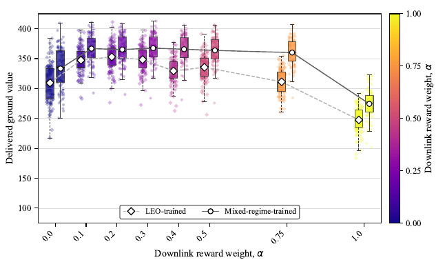
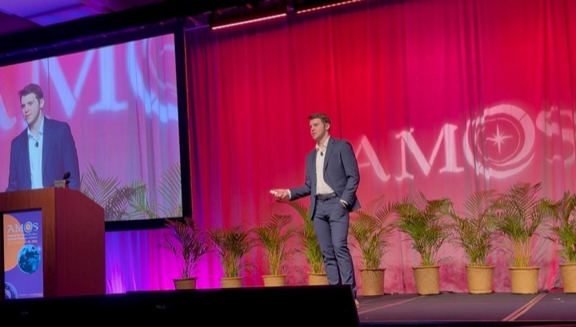

AMOS
2026
Responsive Autonomous Resident Space Object Imaging and Catalog Maintenance Using Reinforcement Learning Across Orbital Regimes
Persistent, priority-aware catalog maintenance by a single LEO observer imaging targets in LEO, MEO, and GEO. The formulation supports repeated observations, online target-priority promotions, and variable-duration imaging and downlink actions. The study adapts a target-wise attention policy and evaluates training-catalog composition, acquisition–delivery rewards, catalog-size transfer, and response to changing priorities.
Figures and presentation media
